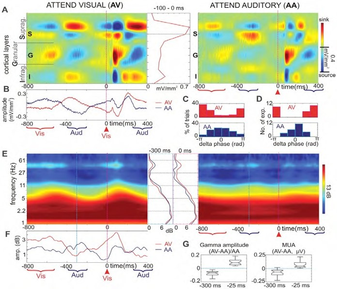

<div class="textcontainer">
<h3>About Me</h3>
<p class="margin"> </p>
<div class="center-row">
<img src="./ben.jpg" alt="photo of Ben" style="width:100%; max-width:350px;">
<p id="aboutme">
Hello! I'm Ben, a first year student at the GSD in the Master in Design
Studies (MDes) program. Specifically, I am part of the "Mediums" cohort
where I study emerging technologies and their implications for design,
fabrication and human-computer interaction.
</p>
</div>
<p class="margin"> </p>
I traversed many paths before coming to Harvard for grad school.
Too long ago, I got a bachelor's degree in cognitive neuroscience. I studied the way that music and rhythm can entrain electrical frequencies in the brain. After college, I studied addiction neuroscience in academia, and later helped design digital tools and tests in industry to measure a wide variety of cognitive functioning.
<p class="margin"> </p>
<div class="flexrow">

<video controls autoplay muted loop
src="./testvid.mp4" alt="video of a computer game" style="width:100%; max-width:300px;">
</div>
<p class="caption">An article I co-authored and an example of the cognitive tests I helped develop</p>
<p class="margin"> </p>
Along the way, I burned out from research and moved to NYC to start a set design studio. I did a lot of corporate work for big brands, magazines & TV networks, but my favorite jobs were indie theater productions and music videos.
<p class="margin"> </p>
<div class="flexrow">
</div>
<p class="margin"> </p>
<div class="flexrow">
<img src="./penal colony.jpg" alt="photo from the scene of a different play" style="width:100%; max-width:400px;">
</div>
<p class="caption">Some examples of the work I enjoyed the most</p>
<p class="margin"></p>
I also worked briefly in interaction design, dealing with wearable devices and larger scale installations.
<p class="margin"> </p>
<div class="flexrow">
<img src="./band cases.jpg" alt="photo of 3d printed parts." style="width:100%; max-width:400px;">
</div>
<p class="caption">Interactive wristbands for real-time social networking...</p>
<p class="margin"> </p>
<div class="flexrow">
<img src="./plinth room.jpg" alt="photo of a woman in a room with screens." style="width:100%; max-width:400px;">
</div>
<p class="caption">...and a data visualization experience I worked on</p>
<p class="margin"></p>
I'm excited to work on some cool stuff this semester! Head on over to [Week 1](./01_intro/index.html) to check out my ideas for a final project.
</div>